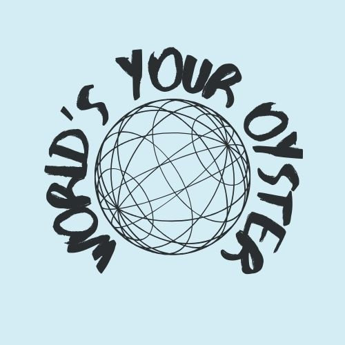

The World is Your Oyster
Welcome! The World Is Your Oyster was created in 2024 to encourage people to engage with their city and communities. At the moment, it is only available to residents of the District of Columbia, but we are working on adding more cities and regions to our site. The idea behind The World is your Oyster is a major problem that is deepening the divide in the US is that people rarely engage with other communities and groups, which allows prejudice and bigotry to build. By encouraging people to venture out of their bubble and meet new people, we hope that it will encourage cross-community interaction and bring groups together.